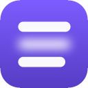

Point. Click. Blur.
The content stays where it was — just out of your attention's reach.
- 1Press Alt+B on any website (or click the toolbar icon).
- 2Click the thing that distracts you — a feed, a sidebar, comments.
- 3Done. It stays blurred. Need it anyway? Hold the 👁 peek button for a moment.
Or start with one click
Applies our hand-tuned blur rules for that site. You can toggle each one later from the toolbar popup.